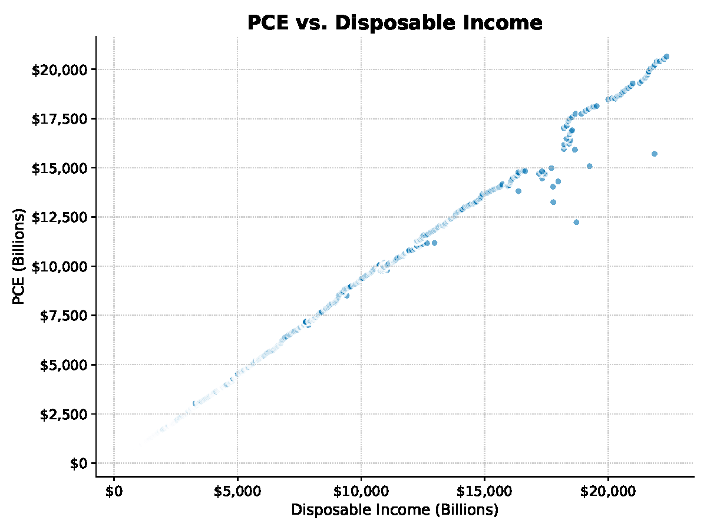
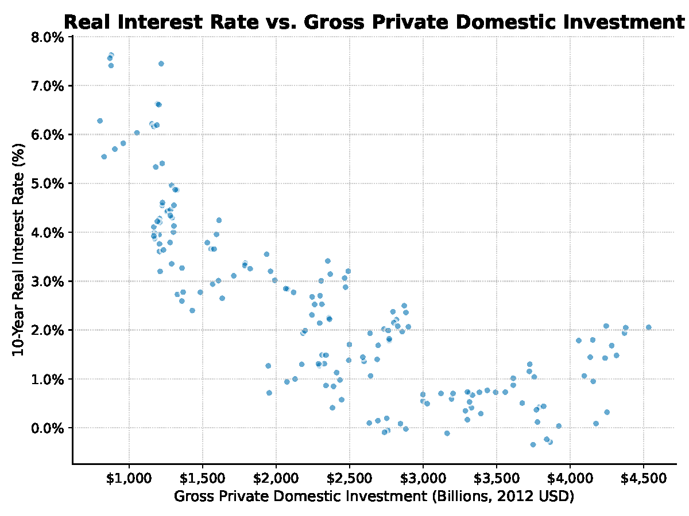

By the end of this unit I should be able to:
- Given our assumptions, be able to explain:
- How consumption is determined and why it depends on disposable income.
- How planned investment is determined and why it depends on the real interest rate.
- How government spending and taxes are determined.
- Know the difference between planned and actual investment.
- Be able to explain why unplanned inventories are important.
- Know the difference between planned and actual expenditure.
- Explain how the economy adjusts when actual expenditure does not equal plan expenditure.
- Find the equilibrium in the goods and services market both graphically and mathematically using equations.
- Solve for the investment multiplier and use it to find changes in the equilibrium level of output.
- Understand the relationship between the interest rate and the equilibrium level of output.
- Articulate how the IS curve is derived.
NotationImportant Notation
- : Consumption
- : Investment
- : Government Purchases
- : Net Exports
- : Taxes
- : GDP (expenditure, income, production)
- : marginal propensity to consume
- : marginal propensity to save
- : savings
- : unplanned inventory investment
What Determines the Demand for Goods and Services?
We need to address the four components of GDP
Consumption
- How much do people consume?
- Households receive from their labor and their ownership of capital and they pay to the government.
- Income net of taxes is referred to as income: .
- Consumption decisions are made using the disposable income. Thus we have a consumption function:


Disposable Income and Personal Consumption Expenditure (PCE) - The is the amount by which consumption changes when disposable income increases by one dollar.
- The change in consumption is to the MPC times the change in income.
- The is the amount by which consumption changes when disposable income increases by one dollar.
- This means the consumption function:
Figure 1 — The consumption function
Figure description loading.
- Aggregate Saving (S): The part of aggregate income that is not consumed.
- Marginal propensity to : The fraction of a changed in income that is saved.
- What else could consumption depend on?
- The rate
- of the Future
Investment
- Both firms and households purchase goods.
- Firms buy investment goods to add to their stock of and to replace capital as it wears out.
- Households buy houses, which are also part of investment.
- Total investment in the United States averages about of GDP.

BIG QUESTION: Why does investment depend negatively on the real interest rate?
- Investment is the purchase of new capital which requires money. Where does this money come from?
- You can it
- In this case the real interest rate is the of borrowing money.
- You can use your money
- In this case the real interest rate is the cost of using your own money.
- You can it
- For an investment to be the return must be than the interest rate.
- Consider an investment that returns per year, this project is profitable if the interest rate is than 10%.
- Higher interest rates require higher returns on your project.
- The interest rate determines which projects are economically feasible for the firm.
- There are projects that pay rates of return.
- Therefore as the interest , there are economically viable projects for the firm to pursue, therefore they invest .
- The planned investment function is:
- where
Figure 2 — Planned investment and the real interest rate
Figure description loading.
- What is the difference between planned investment and actual investment?
- Investment (): Those additions to capital stock and inventory that are planned by firms.
- Investment (): The actual amount of investment that takes place; it includes items such as unplanned changes in inventories.
- is the stock of goods that a firm has awaiting sale.
- If a firm how much it will sell in a period, it will end up with in inventory than it planned to have. Which means they will investment more than they planned. Investment =Investment +Change in Inventory
- is the stock of goods that a firm has awaiting sale.
ExamplePlanned vs. Actual Investment
- Suppose planned investment for our firm is this year.
- Scenario 1:
- The firm produced of output but only sold .
- The unplanned change in inventory is: .
- Actual investment is: I^a = I + Unplanned Change in Inventory =
- The firm produced of output but only sold .
- Scenario 2:
- The firm produced of output but sold .
- The unplanned change in inventory is: .
- Actual investment is: I^a = I + Unplanned Change in Inventory =
- The firm produced of output but sold .
Government Spending and Taxes
- There are two types of government spending: and payments
- Only are included in GDP.
- are made to households who use them to finance .
- They are counted in the component of GDP.
- Transfers can be thought of as a tax.
- Transfers include things like social payments, insurance, and checks.
- Budget : The difference between what a government spends and what it collects in taxes in a given period: .
- If , the government is running a , or increasing its debt.
- If , the government is running a , or retiring its debt.
![Line chart of the U.S. federal budget surplus or deficit, as a four-quarter moving average in billions of dollars, from 1960 to 2025, with recessions shaded and a dashed line at zero. The balance is close to zero through the 1960s, drifts to deficits of $50 to $80 billion through the 1970s and 1980s, briefly turns to a surplus of about $60 billion around 2000, then falls to about minus $350 billion after 2008 and to about minus $1,000 billion in 2020 before recovering to roughly minus $450 billion. The deficit widens in every shaded recession.](../../../../assets/figures/unit-07/annual_budget_deficit_with_recessions.png)
Government Budget Deficit
- The budget deficit in the media versus how economists think about it:
- In the media, the deficit is defined as: Government+Payments − GrossRevenue
- Economists define the deficit as: Government− (GrossRevenue −Payments)
- The two measures are
- We avoid discussion on how the government makes decisions regarding spending and taxes and just assume they are fixed (exogenously set).
- Note: Fixed does not mean these values don't , it just means that their value is determined of the model.
Planned and Actual Expenditure
- Aggregate Expenditure (): The total amount the economy plans to spend in a given period.
- Equal to plus Investment plus purchases
- Aggregate Expenditure (AE): The total amount the economy actually spends in a given period.
- Equal to plus Investment plus purchases
- The difference between and expenditure is the difference between planned and actual .
- The difference between planned and actual investment is the change in .
- If then inventories are unexpectedly .
- If then inventories are unexpectedly .
- The difference between planned and actual investment is the change in .
- : Occurs when no one wants to change their decision
- Actual Expenditure needs to planned expenditure.
- Why does in equilibrium?
- Consider the definition of the approach to calculating GDP:
- This is the same as the equation for aggregate expenditure. This means the equilibrium equation can be written as:
- Note:
- is : the total amount being produced.
- is the total amount being .
- Consider the following situations:
- : aggregate planned unplanned inventory
- Firms are producing than is being purchased, therefore inventories unexpectedly .
- Firms will respond by their production.
- : aggregate planned unplanned inventory
- Firms are producing than is being purchased, therefore inventories unexpectedly .
- Firms will respond by their production.
- : aggregate planned unplanned inventory
- or be the equilibrium because firms will their decisions if they are in either situation.
Finding the Equilibrium
Setting Up the Problem
- Suppose we have the following economy:
ExampleExample: Equilibrium with Numbers
Scenario 1: Y=300
- Consumption:
- Planned Investment:
- Government Purchases:
- Planned Expenditure:
- All the actors in the economy (households, firms, government) are buying () than is being produced ().
- There will be an unplanned in inventory of
- Firms will respond by their production.
Scenario 2: Y=700
- Consumption:
- Planned Investment:
- Government Purchases:
- Planned Expenditure:
- All the actors in the economy (households, firms, government) are buying () than is being produced ().
- There will be an unplanned in inventory of
- Firms will respond by their production.
Scenario 3: Y=450
- Consumption:
- Planned Investment:
- Government Purchases:
- Planned Expenditure:
- All the actors in the economy (households, firms, government) are buying () what is being produced ().
- There is unplanned change in inventory
- Firms will respond by keeping their production the .
Conclusions
- We can see that the equilibrium level of output occurs when .
- For values than 450, so there is an unexpected in inventory, causing firms to production.
- For values than 450, so there is an unexpected in inventory, causing firms to production.
Finding the equilibrium graphically
There will be two lines on our graph
- The first is a -degree line labeled .
- For every point on a 45-degree line, the value on the is the same as the value on the .
- Since the y-axis is and the x-axis is , that means that at every point on the 45-degree line: .
- Every point on the 45-degree is a equilibrium. Where is the equilibrium?
- The second line is the planned expenditure line:
- We can plot the line on our graph below.
Key resultShifting the Planned Expenditure Curve
- Important:
- Determinants of the
- Government : increasing G, increases the y-intercept.
- Rate (determines investment): increasing r, lowers investment, which lowers the y-intercept.
- : increasing T, lowers the y-intercept.
- Government : increasing G, increases the y-intercept.
- Determinants of the
- Marginal to Consume: larger MPC, steeper slope.
- Determinants of the
Figure 3 — Finding the equilibrium: the Keynesian cross
Figure description loading.
- We can see that the equilibrium takes place at point where (on the 45-degree line).
- What would happen if income () was equal to ?
- At , , which means more is being than .
- This would cause an unplanned in inventories and firms would produce as a result.
- How are firms going to produce more?
- Until there is longer an unexpected in inventories ().
- Note: We most likely do not more to the equilibrium, firms will their production over time.
- What would happen if income () was equal to ?
- At , , which means more is being than .
- This would cause an unplanned in inventories and firms would produce as a result.
- How long are firms going to produce ?
- Until there is no longer an unexpected in inventories ().
Finding the Equilibrium Analytically
- Perhaps the easiest way to find the equilibrium value for is to solve directly.
The Interest Rate and Equilibrium Output
- Suppose we have our initial economy:
- r =
- The only difference is that interest rate has risen from to .
- We can start by finding the equation for planned expenditure:
- The difference with this PE equation and the previous one is that the y-intercept has fallen from to .
- Notice that this change in the y-intercept is equal to the change in investment.
- If investment fell by , how much do we expect output to fall by?
- Notice that this change in the y-intercept is equal to the change in investment.
- The difference with this PE equation and the previous one is that the y-intercept has fallen from to .
- We can solve for the new equilibrium level of output directly:
- As a result of the increase in the interest rate, equilibrium output fell from to (Y =).
- Two questions:
- Why did equilibrium output ?
- Why did it fall by the that it did?
Why did equilibrium output fall?
- The new planned expenditure line is
Figure 4 — A higher interest rate, and the output that follows
Figure description loading.
The interest rate goes from 5 to 10, so planned investment falls from 50 to 0 and the whole PE line drops by 50. At the old output of 450 the economy is producing 50 more than anyone plans to buy, so firms cut back — and they cut back by 100, twice the fall in investment. That factor of two is what the next figure explains. - At point A:
- Production () is still .
- Because of the in investment (due to the interest rate), planned expenditure is .
- , which causes an unplanned in inventory.
- Which causes firms to production, thus output (income).
- At point A:
Why did Equilibrium Output Fall by More than the Change in I?
- Investment fell by , but output fell by , why?
Key resultThe Multiplier Effect
- Investment falls:
- Planned expenditure falls:
- Unplanned inventories rise ⇒ goods pile up on the shelf Unplanned inventory investment
- Firms cut production:
- Income falls, so consumption falls
- Planned expenditure falls again:
- Unplanned inventories rise ⇒ goods pile up on the shelf Unplanned inventory investment
- Firms cut production:
- Income falls, so consumption falls
- Planned expenditure falls again:
- Unplanned inventories rise ⇒ goods pile up on the shelf Unplanned inventory investment
- Firms cut production:
- Income , so consumption
- Planned expenditure again
- Unplanned inventories ⇒ goods pile up on the shelf Unplanned inventory investment
- Firms production
Figure 5 — Why output falls by more than investment
Figure description loading.
- Notice that each time falls, it falls by of the previous fall: . Why?
- Because , in general if we know the fall in output, the next fall is: .
- This means that we can find the total fall by adding up each of the individual falls:
- This is tedious, but fortunately there is a formula that tells us how much output will fall for a given change in investment and the MPC:
- This is called the multiplier
ExampleExample: Using the Investment Multiplier
Scenario 1: Using the numbers from our model
- MPC =
- I =
- Notice our model predicted that when the interest rate from 5 to 10, investment would fall by , and output would fall by (from 450 to 350).
- The multiplier this fall.
Scenario 2: A New Example with different numbers (not related to our current model
- MPC =
- I =
The IS Curve
- IS curve: Relationship between the equilibrium level of output and the interest rate in the goods market.
- In the goods market, there is a relationship between output and the interest rate because planned investment depends negatively on the interest rate.
- We just saw this in our numerical examples, when the interest rate rose from to , equilibrium output fell from to .
- Any point on the IS curve is an in the goods market for the given interest rate.
- In the goods market, there is a relationship between output and the interest rate because planned investment depends negatively on the interest rate.
- Remember, we found that:
- When , . We will call this point .
- When , . We will call this point .
Figure 6 — From the goods market to the IS curve
Figure description loading.
Key result
- The IS curve shows the level of in the market for a interest rate.
- The IS curve slopes downward because a interest rate, causes investment to , which results in planned expenditure. The in planned expenditure causes an unplanned inventories, which causes firms to their output.
Accessibility accommodation: If you have an official ADA
accommodation and are having difficulty using this page, please contact your
professor directly to request alternative materials.